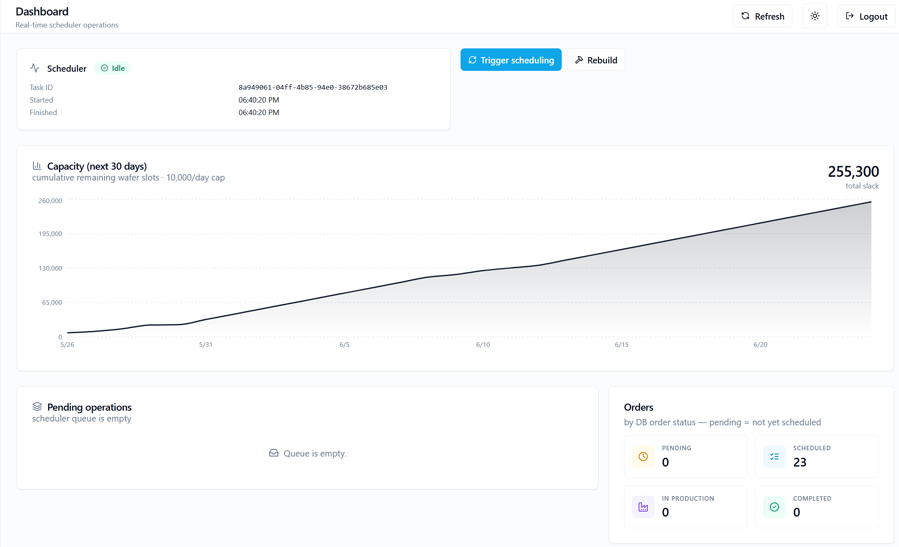
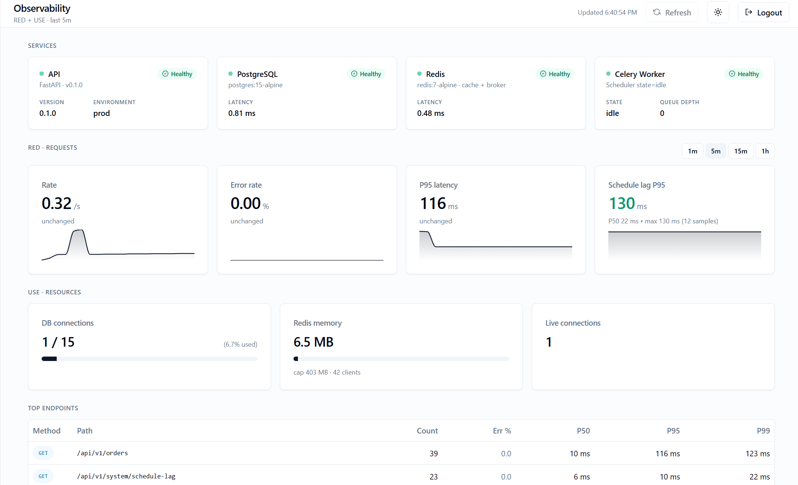
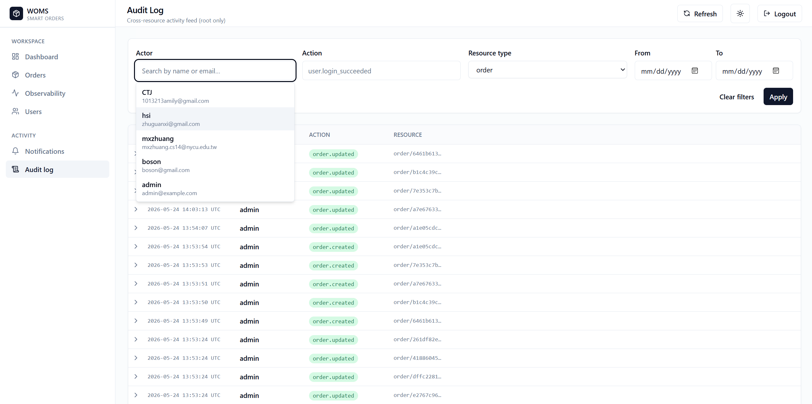

Smart Order
Management System
(WOMS)
晶圓代工訂單管理
+
智慧排程系統
Agenda
01
開發規範與 CI
02
User Story 與整體架構
03
三大功能區塊
04
測試與排程設計
05
AWS 部署
06
Demo
1
工程紀律
(RULE.md)
規範
12-Factor App
原則
Bulletproof React
架構
Google API / Python
規範
FastAPI
嚴格分層架構
CI 管線
PR
Backend
ruff
mypy --strict
pytest (testcontainers)
Frontend
eslint
tsc
vitest
merge 🟢
2
Dashboard
Real-time scheduler operations

Scheduler 狀態
state · task ID · 時間
30 天累積產能
業務面 capacity 折線
Pending Ops queue
worker queue 即時深度
訂單分布 by status
pending / scheduled / …
3
Observability
三層指標 + 業務 SLI

Services 健康燈
API · DB · Redis · Celery
RED + ★ Schedule Lag
業務 SLI、不是教科書 RED
USE — 資源層
DB pool 跨 pod 聚合
Top Endpoints
最熱 API · P50/P95/P99
4
Audit Log
Cross-resource activity feed · root only

4 維度 filter
Actor · Action · Resource · Time
完整 activity feed
timestamp / actor / action / resource — 點開看 diff
5